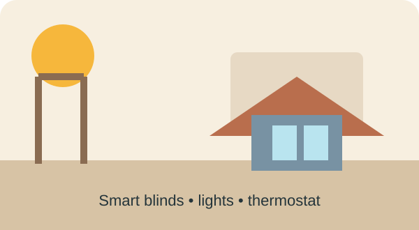
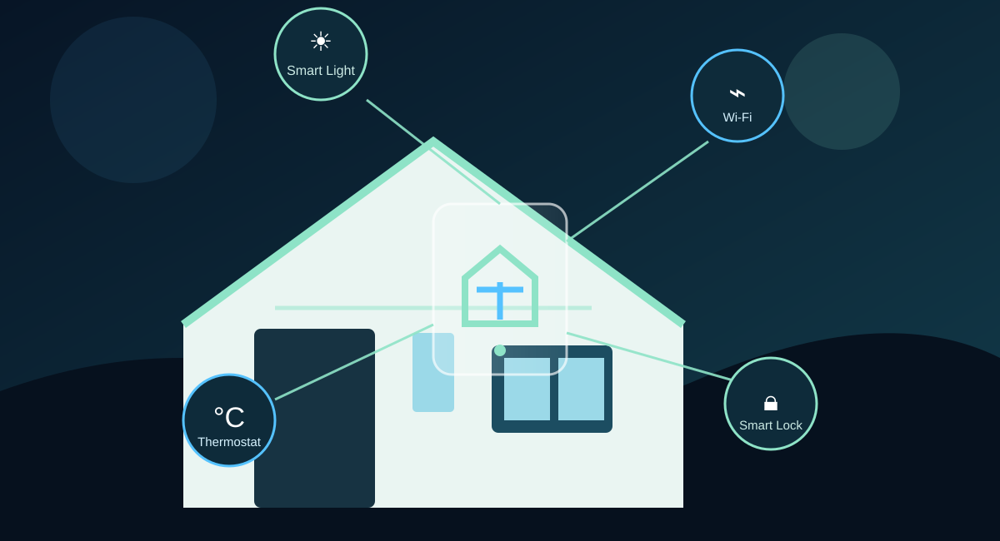
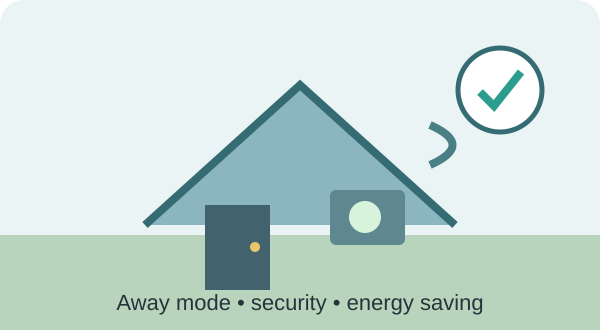
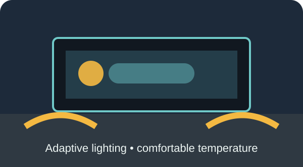
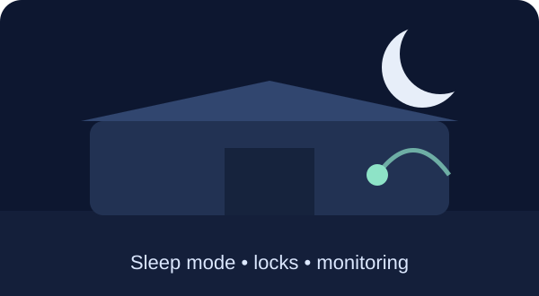
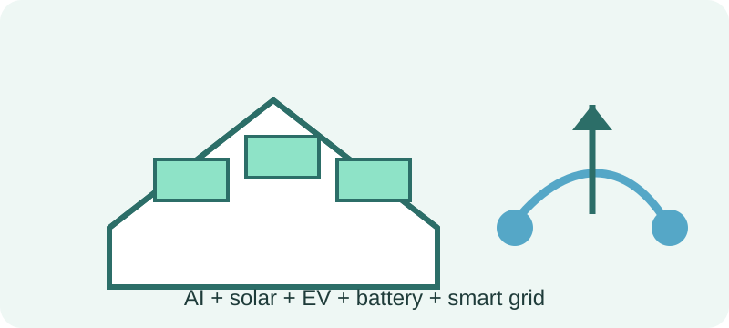

🌅 Morning — 7:00 AM
Smart blinds open with daylight. The thermostat checks the room temperature and the coffee machine can start according to a schedule.
Exploring how connected devices can make everyday homes more convenient, secure and energy-aware.
Imagine waking up in a home that already knows your morning routine. The curtains open, the lights become brighter and the room temperature adjusts before you even leave the bed. This is one of the practical uses of the Internet of Things (IoT).
A smart home connects everyday devices such as lights, thermostats, security cameras, refrigerators, televisions and smart plugs to a network. These devices can collect information, exchange data and respond automatically or through a mobile application.
The main idea is simple: the devices become more useful when they work as a connected system instead of acting separately.

A simple day shows how sensing, communication and automation can work together.

Smart blinds open with daylight. The thermostat checks the room temperature and the coffee machine can start according to a schedule.

When everyone leaves, unnecessary lights and appliances can switch off. Door sensors and cameras continue monitoring the home.

Lights can turn on when movement is detected, while the AC or fan adjusts the room for a comfortable evening.

Lights dim, smart locks check the doors and the home changes to a low-energy sleep routine.
Temperature, motion, light and humidity
Wi-Fi, Bluetooth, Zigbee or similar networks
Cloud or edge systems analyse the data
Mobile apps and dashboards provide control
Lights, AC, locks and appliances respond
SDG 7 aims to ensure access to affordable, reliable, sustainable and modern energy. Smart homes can support this goal by making energy use more visible and helping people reduce waste.
For example, smart plugs can show how much electricity an appliance uses, while smart thermostats and automated lighting can reduce unnecessary operation. The technology does not automatically make a home sustainable; the benefit comes from using it responsibly and efficiently.
UN Sustainable Development Goal 7 →In the future, AI can make smart homes more predictive. Instead of waiting for a command, a system could learn household routines and suggest or automate actions. Smart homes could also interact with rooftop solar panels, batteries, electric vehicles and smart grids.
At the same time, connected devices create challenges. Privacy, cybersecurity, higher initial costs, internet dependence and compatibility between brands must be considered. Standards such as Matter are intended to make compatible smart-home devices work together more easily.

“In my opinion, the biggest advantage of IoT in a home is not just controlling appliances from a phone. It is the combination of automation and better use of resources. A smart home should make life easier without becoming expensive or unnecessarily complicated.”
NISTIR 8425 (2022) — consumer IoT cybersecurity capabilities.
UNITED NATIONSOfficial SDG 7 targets, including improving energy efficiency.
CONNECTIVITY STANDARDS ALLIANCETechnical information about interoperability for connected devices.
NISTNISTIR 8267 — security considerations for consumer home IoT.
Image note: The smart-home illustrations and diagrams in this page are original visuals created for this student blog. External factual claims are supported through the references above.